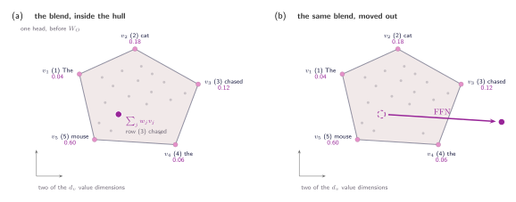
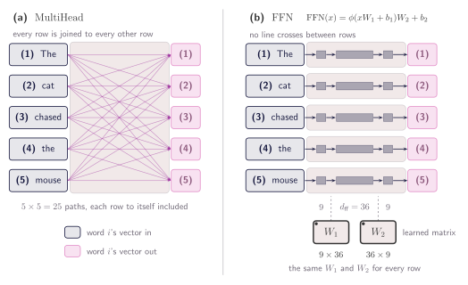
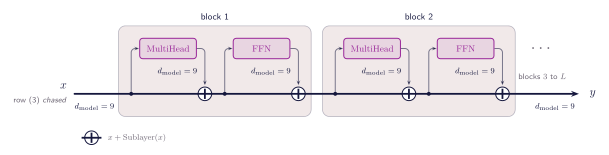
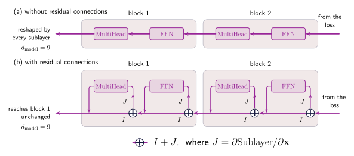
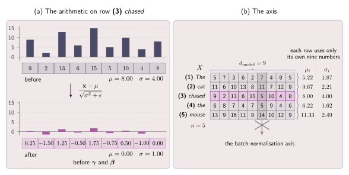
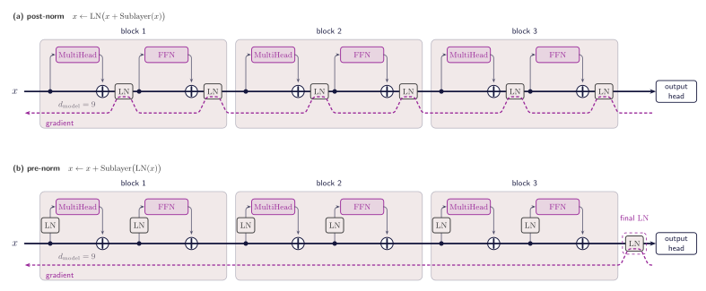
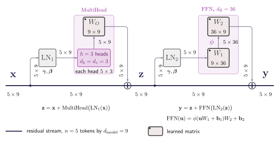
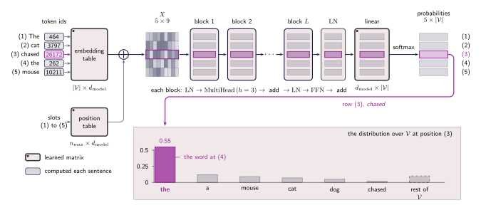

10 · Queries, Keys, and Values
The Transformer Block
Transformers The Rich and the Famous
Let's recap the overall idea of what we are trying to achieve. We want every word in a sentence to end up with a vector that carries what the rest of the sentence contributes to it, and we want the model to decide on its own which other words matter. That part is now built. The sentence arrives as $X$ with its positions already in it, each head turns it into $Q$, $K$ and $V$, the mask settles which positions a query is allowed to read, and $W_O$ folds the heads back into one vector per word, at the width the word arrived at. The word chased leaves holding 0.60 of mouse, 0.18 of cat, and a small amount of each remaining word.
Section 08 set the model a task: read The cat chased the and give the word that follows. Answering mouse means using two facts that now sit in the same vector, that the subject is a cat and that the verb is chased. Attention put both of them there by averaging. Averaging is not the same as deriving a third fact from the two, and no part of the model does that yet. Gathering information and computing something with it are two different operations, and the model so far performs only the first.
This section builds what is missing. First a small network that computes with each word's vector, then the wiring that lets many of these blocks be stacked without the signal degrading. By the end the model is complete, from a token going in to a distribution over the next word coming out.
Two rounds collapse into one
Let's begin by considering what happens if we run the attention mechanism a second time. A single round of attention outputs the exact same shape it receives, which is one vector per word with a width of $d_{\text{model}}$. Because of this, its output can be plugged right back in as a new sequence matrix $X$ to repeat the cycle. The logic here is that giving the model another pass might allow it to pull together deeper patterns and capture a richer contextual understanding.
To keep it more readable we will follow a single head, since nothing in the argument changes when there are $h$ of them.
Recall what section 05 left us with:
Two of those pieces can be written more compactly. The softmax factor is the $n \times n$ table of weights, so let us call it $A$:
And section 06 told us where $V$ comes from: $V = XW_V$, the sentence with a projection applied to it. Substituting both into the formula above, one round of attention is:
Where $A$ mixes the rows of $X$ together, and $W_V$ reshapes each row on its own.
Now feed that output into a second round. It has the same three factors: its own table of weights $A_2$, whatever it was handed, and its own projection $W_V^{(2)}$. Freeze the weights for a moment, so that $A_1$ and $A_2$ are fixed grids of numbers, and two rounds written one after the other give:
Look at what the right-hand side says. $A_2 A_1$ is a single $n \times n$ table, and $W_V^{(1)} W_V^{(2)}$ is a single projection, so the whole thing has exactly the form we started with, $A X W_V$. Two rounds of attention have the shape of one round, and we paid for the second one to get a differently weighted average of the same five vectors.
We froze the weights to get that result, and in a real stack they are not frozen. $A_2$ is computed from whatever the first round produced, so the second round's weights do depend on the first round's output, and running attention twice is not the same as running it once. But that dependence sits in $A$, in the proportions of the blend. It never sits in the vectors being blended. Every value travels from one end of the mechanism to the other without passing through a nonlinear function. The softmax decides how much of each word to take, never what any word is.
The limit can be stated geometrically. Every row of $A$ is positive and sums to one, which is exactly what we demanded of it back in section 04, so the answer a head returns is an average of the value vectors in which no weight is ever negative. A head can move a word anywhere inside the region its value vectors span, and nowhere else. The left panel below draws that region for our sentence, with chased's answer sitting inside it. The right panel is where we need to get to.

Give every word its own network
Let's move on to the next step. The attention mechanism has already enriched each word's vector with relevant contextual information from the surrounding sequence. Consequently, the next objective is to perform a computation strictly on this updated vector, rather than averaging it with its neighbors again. Attention has already done all the necessary sideways looking, and it is the only part of the model that ever needs to. This means whatever mechanism we add next should strictly read one word's vector at a time and nothing else.
That step is two matrix multiplications with a function applied in between:
Here $\mathbf{x}$ is one word's vector, $W_1$ is $d_{\text{model}} \times d_{\text{ff}}$ and $W_2$ is $d_{\text{ff}} \times d_{\text{model}}$, so the vector widens to $d_{\text{ff}}$ and comes back to the width it arrived at. The usual choice is $d_{\text{ff}} = 4\,d_{\text{model}}$, which is 36 for our nine-wide example. The function $\phi$ is applied to each number on its own. The figure below puts this next to attention. On the left every row is joined to every other row. On the right each row runs through the same $W_1$ and $W_2$ on its own, and no line crosses between rows.

The most common choice for $\phi$ is the ReLU function, which simply replaces any negative number with a zero and leaves positive numbers unchanged. Each column in the $W_1$ matrix compresses the word's vector into a single number. Because ReLU only keeps positive numbers, a column will output zero unless it detects a very specific combination of features, like a vector containing both a "cat" and a "chase" concept at the same time. Afterward, the $W_2$ matrix takes the results of those successful detections and writes them back into the word's vector. Expanding the vector's width to $d_{\text{ff}}$ gives the model enough room to run thousands of these specific tests at once, and shrinking it back down to $d_{\text{model}}$ packages those conclusions so the rest of the architecture can read them.
The block now has both operations. Attention moves information between words, the feed-forward network computes with it, and a word leaves at the width it arrived at, so the pair can be applied again to its own output. Repeating it is what gives the model depth, and it is also where the next problem appears. Each sublayer replaces the vector it was handed, so after a dozen of them nothing of the original word is left!
Adding blocks
We now have both operations, so the natural move is to repeat them: attention, then the feed-forward network, then attention again, and so on for as many blocks as we can afford. However, stacking them that way does have a cost. Each sublayer takes a vector and hands back a different one, so what leaves a block is not what entered it. One block is fine. A dozen in a row means the word we started with has been overwritten a dozen times, and anything about it the model still needs has to be rebuilt at every step. The fix is to add rather than replace. A sublayer still reads the word's vector and still produces something from it, but what it produces is added to the vector it was given rather than taking its place:
where $\operatorname{Sublayer}$ stands for one of the two steps we now have. Written at the level of the whole sentence, a block is those two updates one after the other:
$X$ is the sentence going in, $Z$ is what it becomes after attention, and $Y$ is what leaves the block. All three are $n \times d_{\text{model}}$, so both additions line up row by row. The two steps read their input differently, and that difference is the one from the figure above: $\operatorname{MultiHead}$ needs the whole of $X$ to build any one of its rows, while $\operatorname{FFN}$ is applied to each row on its own. This is called a residual connection.
Now nothing is thrown away. The vector that arrived is still there in the sum, and what the sublayer produced sits on top of it, so each step contributes a correction rather than a replacement. A sublayer with nothing useful to add can produce values near zero, and the block passes the vector through unchanged, which means depth can no longer destroy what earlier blocks built.
The figure below follows one word, row (3) chased, through two blocks. Look at the line running from $x$ to $y$: it is never interrupted. Each sublayer samples from it, does its work off to one side, and returns through a $\oplus$, so nothing ever sits on the line itself. The width specified along it stays $d_{\text{model}} = 9$ at every point, before and after every addition. Read that line from left to right and one word's vector is a running total meaning every block reads it, and every block adds to it.

Adding these blocks instead of replacing them creates another major advantage that we only see during training. When the model makes a mistake, the correction has to travel backward from the final loss to every previous block in a process called backpropagation. In a standard stack without residual connections, that correction gets forced through every single sublayer and gets reshaped by each one along the way. But because we use addition, the derivative of $x + \operatorname{Sublayer}(\mathbf{x})$ with respect to $\mathbf{x}$ becomes $I + \partial \operatorname{Sublayer} / \partial \mathbf{x}$. That $I$ is the identity matrix, and it acts as an express lane that completely bypasses the sublayer's internal math. Because of this clear path, an important correction can safely travel all the way back to block one, no matter what the sublayers in between are doing.
The figure below draws that backward journey twice, with every arrow now pointing left because the correction travels from the loss back towards block 1.
- (a) No residual connections. The stream runs through each sublayer, so the correction has to pass through every one of them on the way, arriving reshaped four times over.
- (b) The additions are in place. At each $\oplus$ the correction forks in two: one copy carries on along the stream untouched, the other climbs into the sublayer.
That first copy is the $I$ in the derivative above, and it is what reaches block 1 intact however small the sublayer's own contribution has become.
Aside: where the identity in the derivative comes from
Write one sublayer as a function $f$, so a residual step is $\mathbf{y} = \mathbf{x} + f(\mathbf{x})$, with $\mathbf{x}$ and $\mathbf{y}$ both vectors of length $d_{\text{model}}$.
Differentiating a vector by a vector gives a matrix, called the Jacobian. Its entry $(i, j)$ answers one question: how much does output $y_i$ move when input $x_j$ is nudged?
Write the residual step one component at a time. The $i$-th number coming out is the $i$-th number going in, plus the $i$-th number the sublayer produced:
Notice the asymmetry in that line. The sublayer is written as $f_i(x_1, x_2, \ldots, x_d)$ with all $d$ components of $x$ as its arguments, because a sublayer may read the whole vector when producing its $i$-th output. The $x_i$ beside it is a single component, copied straight across. Differentiating with respect to $x_j$ then yields:
So where does the identity come from? From the $\frac{\partial x_i}{\partial x_j}$, and the answer is that there is no relation between $x_i$ and $x_j$ at all. They are two separate components of the input vector, free to be set independently of one another, so nudging $x_j$ does nothing to $x_i$ unless they happen to be the same number:
Let us do that with real indices. Take $d = 3$ and write out the second output in full:
Differentiating it against two different inputs gives two different answers. First against $x_1$:
The first term is the derivative of $x_2$ with respect to $x_1$. But $x_2$ is not a function of $x_1$, so its derivative is $0$. Now against $x_2$ instead:
This time the first term is the derivative of $x_2$ with respect to itself, which is $1$. So the extra $1$ appears exactly when the output index matches the input index, and nowhere else. Ones down the diagonal and zeros everywhere else is precisely the identity matrix.
That is the $\delta_{ij}$ we already met in section 04 (Jacobian aside), and collecting every $(i, j)$ into a table gives the identity matrix. Writing $J$ for the sublayer's own Jacobian:
Now the correction itself. Write $\mathcal{L}$ for the loss. Backpropagation arrives carrying $$\mathbf{g} = \partial \mathcal{L} / \partial \mathbf{y}$$ which says how that loss responds to this step's output, and turns it into $\partial \mathcal{L} / \partial \mathbf{x}$ by multiplying by the Jacobian:
Two terms, and they are the two arrows in the figure below. The $\mathbf{g}$ on its own is the copy that arrives unchanged, and $\mathbf{g}J$ is the copy that went through the sublayer. The addition in the forward pass is what splits the correction in the backward one.
Why it matters over a deep stack
Stack $L$ blocks, the same $L$ the figures label as "blocks 3 to $L$". Without the residual, each step contributes only its own Jacobian, and the correction reaching the first one is a product of all of them:
Every factor scales what passes through it. If those factors are typically a little smaller than one, the product shrinks towards nothing long before it arrives, and if they are a little larger it grows without bound. With the residual, each factor becomes $I + J_\ell$ instead:
Every bracket in that product is the $I + \partial \operatorname{Sublayer} / \partial \mathbf{x}$ we derived at the top of this aside, one copy of it per sublayer in the stack. Multiply the product out and it becomes a sum of many terms, one for every way of picking either $I$ or $J_\ell$ out of each bracket. One of those terms picks $I$ every single time, and $I\,I \cdots I = I$, so that term is simply $\mathbf{g}$. The correction that reaches the first block always contains an exact copy of the one that left the loss, whatever the $J_\ell$ happen to be doing.
That term is the express lane, written out. Picking $I$ from every bracket is the same as taking the stream arrow at every fork in the figure below, the route that never once enters a sublayer. Picking $J_\ell$ from a bracket is stepping onto the branch at that block instead. The product simply enumerates every route the correction can take.

The stream solves one problem and creates another. Because the main stream operates as a continuous sum, traversing $L$ blocks results in the original vector accumulating $2L$ distinct residual contributions. As a consequence, the numerical values within the vector tend to grow larger as the network stack gets deeper. This growth directly feeds into the next block's attention mechanism. Queries and keys are built directly from this stream using $\mathbf{q} = \mathbf{x} W_Q$ and $\mathbf{k} = \mathbf{x} W_K$, so if the input $\mathbf{x}$ doubles, both the query and key double, which multiplies the final attention score by four.
Section 04 showed where that leads, since softmax only ever sees the gaps between scores, and stretching them took mouse from 0.60 to 0.96 with everything else rounding to zero. When the block is saturated like this, the derivative $w(1 - w)$ becomes tiny, making it nearly impossible for the model to learn from its mistakes if it looked at the wrong word. Furthermore, the standard scaling factor of dividing by $\sqrt{d_k}$ fails to mitigate this issue, as it is designed solely to counteract growth originating from the vector dimension and cannot account for the compounding magnitude of the residual stream. The next subsection goes into the solution for this.
Keeping the numbers in range - Layer normalisation (LN)
The fix is to put the numbers back in range before a sublayer ever reads them. Take one word's vector, work out the mean of its $d_{\text{model}}$ components and how far they spread around that mean, then subtract the mean and divide by the spread. Whatever arrives, large or small, leaves centred on zero with a spread of one. This is called layer normalisation, and it works on one position's vector at a time.
Written out for a single vector $\mathbf{x}$ with components $x_1, \ldots, x_d$, where $d = d_{\text{model}}$. Bold marks the whole vector and plain type marks one of its numbers:
In this formulation, $\mu$ represents the mean and $\sigma^2$ the variance of the individual vector, with the function $\operatorname{LN}(\mathbf{x})$ executing the rescaling operation. The term $\epsilon$ is a small constant introduced as a safeguard to prevent division by zero in the event that all vector components are identical. Following this, $\boldsymbol{\gamma}$ and $\boldsymbol{\beta}$ act as learned parameter vectors of dimensionality $d_{\text{model}}$, applied element-wise as denoted by $\odot$. These parameters ensure the model is not rigidly constrained to a zero mean and unit variance. While the normalisation step strictly standardises the scale, $\boldsymbol{\gamma}$ and $\boldsymbol{\beta}$ restore the network's representational capacity by allowing it to learn an optimal scale and shift, completely independent of the accumulated magnitude from the network depth.
One detail carries the whole idea: every sum in these formulas only calculates across the features of a single word, from $j = 1$ to $d_{\text{model}}$. It does not run over the words in the sentence, and it does not run over the sentences in the batch. Word (3) chased is normalised using nothing but its own $d_{\text{model}}$ numbers, and it would come out identical if the rest of the batch were thrown away.
This is an important point to highlight because the common
alternative, batch normalisation, calculates its statistics
in a different direction. Batch normalisation averages each feature
across the examples in the batch, and that would break here for
three separate reasons.
Section 08
supplies the first: sentences are padded to a common length, so the
statistics at a late position would be computed partly over
[PAD] slots that stand for no word at
all. The second follows from it, since sentences have different
lengths, the number of real words reaching a given position depends
on what else happened to be in the batch. And the third arises at
generation, when the model runs a single sequence and has no batch
to pull statistics from. Layer normalisation avoids all three by
never looking outside the vector it is given.
The figure below illustrates this arithmetic on real numbers. On the left, row (3) chased arrives as nine values ($d_{\text{model}} = 9$) averaging 8 and spreading about 4 either side, the drifted scale the last subsection warned about. Subtracting $\mu$ and dividing by $\sigma$ leaves the same nine numbers averaging 0 and spreading about 1, and the two bar charts are drawn on the same axis so the collapse is visible. On the right, the same operation across the whole sentence: each of the five rows gets its own $\mu_i$ and $\sigma_i$, five different pairs computed from nine numbers each, with the column running down the matrix marking the direction batch normalisation would have taken instead.

So far the idea has been to normalise the vector before a sublayer reads it. However, this normalisation could also be applied after the addition, to the sum itself, which is what the original Transformer did:
That arrangement is called post-norm. The alternative, and what almost every model since has used, normalises only the copy the sublayer reads and leaves the stream itself untouched:
which is called pre-norm. The two differ by one box moved.
However that one box decides how the gradient flows. In post-norm the normalisation sits on the stream, so the path from the last subsection is interrupted at every step, and a correction travelling back to block 1 is rescaled by every one of those boxes on the way. In pre-norm the stream is not touched, and the additive path runs as we declared above, from the embeddings all the way to the output. The price is one extra $\operatorname{LN}$ at the very end, since the stream now reaches the output head unnormalised. The figure below draws both, three blocks deep with everything identical except where the $\operatorname{LN}$ boxes sit. Follow the dashed line running back from the right: in row (a) it climbs through all six of them, in row (b) it passes through none.

Assembling our legos here comes the Transformer!
We have attention to move information between words, a feed-forward network to compute with it, an addition so that neither one overwrites what came before, and a normalisation so that the numbers stay in range however deep the stack goes. A transformer block is those four things in the order we arrived at them:
Two sublayers, two norms, two additions. $\mathbf{x}$ is the sentence arriving, $\mathbf{z}$ is what it becomes once attention has had its say, and $\mathbf{y}$ is what leaves. The two normalisations are separate, each with its own learned $\boldsymbol{\gamma}$ and $\boldsymbol{\beta}$, which is why they carry different subscripts.
In terms of tensor shapes $\mathbf{x}$, $\mathbf{z}$ and $\mathbf{y}$ are all $n \times d_{\text{model}}$, so a block hands back exactly what it was given: five words in, five words out, nine numbers each. That is the property we have been collecting since section 07, where $W_O$ folded the heads back to the width they started at, and it is what lets us write $\operatorname{Block}(\mathbf{x})$ and then feed the result into another block, and another, without anything in between having to change. The figure below opens one block up and puts a shape on every edge inside it.

The exciting part is that all of this fits in four lines of code! Of
course lots of abstraction happening behind the curtains. The two
sublayers are the ones we already wrote in
section 07
and
section 08, and everything this section added is the wrapping around them.
Notice that layer_norm takes its mean
and variance over dim=-1, the feature
axis, which is the whole of the argument two subsections back
written as one keyword.
def layer_norm(X, gamma, beta, eps=1e-5):
"""Statistics from the last axis alone, so every position is on its own."""
mu = X.mean(dim=-1, keepdim=True)
var = X.var(dim=-1, unbiased=False, keepdim=True)
return (X - mu) / torch.sqrt(var + eps) * gamma + beta
def feed_forward(X, W_1, b_1, W_2, b_2):
"""Applied to each row on its own: d_model -> d_ff -> d_model."""
return F.relu(X @ W_1 + b_1) @ W_2 + b_2
def block(X, attn, ffn, ln_1, ln_2, mask=None):
"""One pre-norm block. X is (n, d_model), and so is the result."""
Z = X + multi_head_attention(layer_norm(X, *ln_1), *attn, mask)
Y = Z + feed_forward(layer_norm(Z, *ln_2), *ffn)
return Y
Every claim this subsection made is a line in that function. The
sublayer reads layer_norm(X, ...) and
never the stream itself, so the norm sits on the branch. What it
returns is added to X rather than
replacing it. And Y comes out shaped
exactly like X, which is what allows
the last line of one block to be the first argument of the next.
Let's just visualize some numbers to get a sense of the number of parameters.
- Attention → $W_Q$, $W_K$, $W_V$ and $W_O$, which across all $h$ heads come to $4d_{\text{model}}^2$ weights, or 324 for our nine-wide example.
- Feed-forward → $W_1$ and $W_2$, which at $d_{\text{ff}} = 4d_{\text{model}}$ come to $8d_{\text{model}}^2$ weights, or 648.
The whole model, at last
Once we stack $L$ of these blocks together, the model is nearly complete. Each block takes in an $n \times d_{\text{model}}$ matrix and outputs one of the exact same size, meaning they can be stacked continuously without changing anything in between. By the time the sentence reaches the top, it has been read and updated $L$ times over. The pre-normalization setup does leave one loose end, though. The data stream arrives at the top carrying $2L$ different additions, and it has not been normalized since the final branch. Because of this, a final Layer Normalization step is applied to the stream before the rest of the model is allowed to read the results.
One piece is still missing, and it is the one section 08 has been waiting for. The stack gives us an $n \times d_{\text{model}}$ matrix, one vector per position, and what the task asks for is a word. So we add one more learned matrix, of shape $d_{\text{model}} \times \lvert\mathcal{V}\rvert$ where $\mathcal{V}$ is the vocabulary, and multiply the stream by it. Each row of $d_{\text{model}}$ numbers becomes a row of $\lvert\mathcal{V}\rvert$ numbers, one score for every word the model knows. A softmax along that row turns those scores into a distribution, the same operation section 04 used to turn attention scores into weights, and that distribution is the answer. For each position, how likely the model thinks each word is to come next.
Aside: what the vocabulary actually is
We have used the word token since
section 06
without saying what the full list of them is. The vocabulary
$\mathcal{V}$ is that list: every distinct token the model is
able to read or produce, fixed once before training and never
changed afterwards. A token id is nothing more than a position
in it, so the 26172 beside
chased in the figure means row 26172 of the table, and
nothing else.
The entries are not quite words. A vocabulary of English words would be both enormous and permanently incomplete, since there is always a name or a typo it has never seen. So the list is built from subword pieces instead, chosen so that common words get an entry to themselves while rare ones are spelled out of smaller parts. For instance, chased is likely one token, where a word the model has never met is two or three, and nothing is ever unrepresentable. Every string can be written, and the list stays finite.
How big? The original Transformer used about 37,000 subword entries, GPT-2 used 50,257, and recent models run to 100,000 or more. That number is not a free choice, because it shows up twice in the model and in both places it costs:
- Going in → the embedding table of section 06 is $\lvert\mathcal{V}\rvert \times d_{\text{model}}$, one row per entry.
- Coming out → the matrix we just added is $d_{\text{model}} \times \lvert\mathcal{V}\rvert$, one column per entry.
These two matrices share an identical shape, differing only by transposition. Assuming dimensions of $d_{\text{model}} = 512$ and a vocabulary size of $\vert{}\mathcal{V}\vert{} = 50,000$, each matrix contains approximately 25 million weights. For comparison, a single transformer block comprises $4d_{\text{model}}^2 + 8d_{\text{model}}^2$ parameters, which equates to roughly 3 million weights at this specific width. Consequently, a single embedding table contains approximately the same number of parameters as eight complete blocks.
That is the whole model. Read the figure below from left to right and every box in it was built somewhere in this tutorial: the embedding table from section 06, the position vectors from section 09, the blocks from this section, the final norm that pre-norm made necessary, and the matrix and softmax we have just added. If you follow the highlighted row you can see what happens with the word (3) chased. It goes in as a token id, collects its context in every block on the way, and comes out as a distribution putting 0.55 on the. That is the word at position (4), which is precisely the guess section 08 asked position (3) to make. The complaint we started with in section 01, that everything a model knew about a sentence had to fit in one fixed vector, has turned into a model that reads a sentence and says what comes next.

Of course as any solution this one also has problems. Every block builds an $n \times n$ table of scores for each of its $h$ heads, so doubling the length of the sentence quadruples that table, and a model reading a long document spends most of its memory there rather than on any of the weights we have just counted. Generating text makes it worse, the model produces one token at a time, and each new token means pushing the whole prefix through all $L$ blocks again. The next section is about what that costs, and what can be done about it.